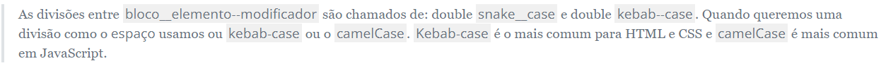
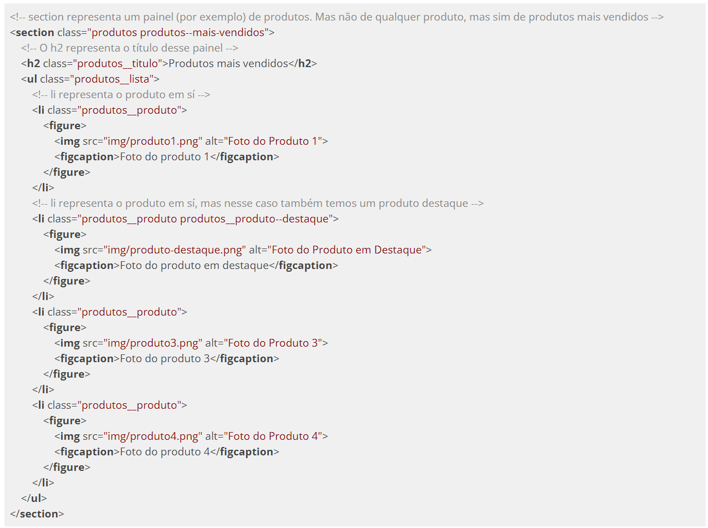
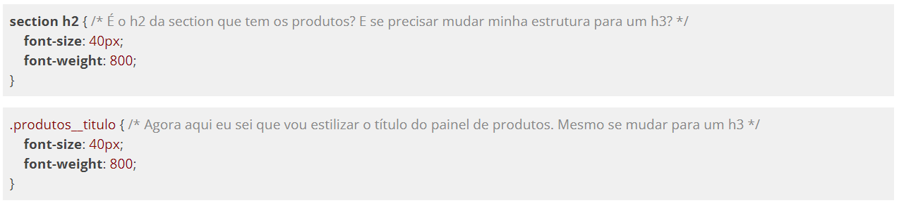
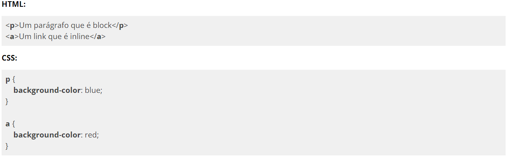
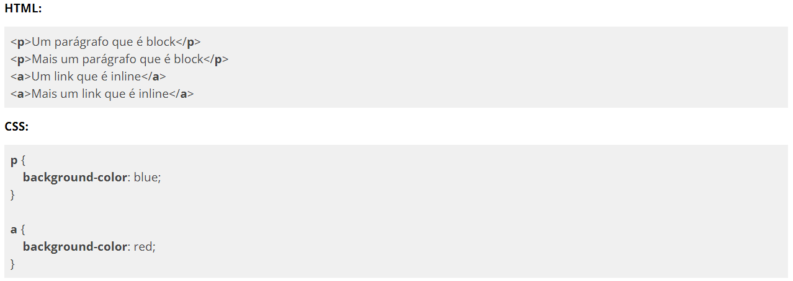
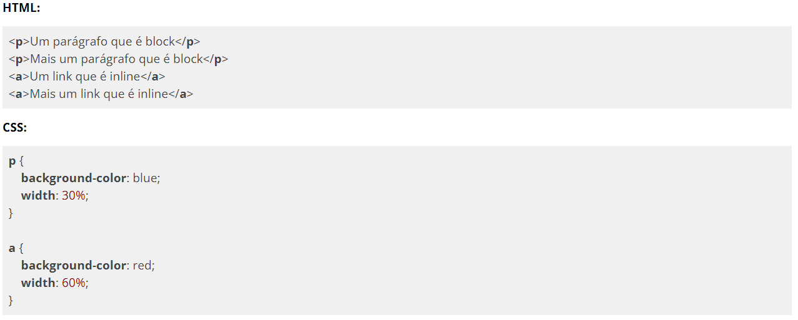
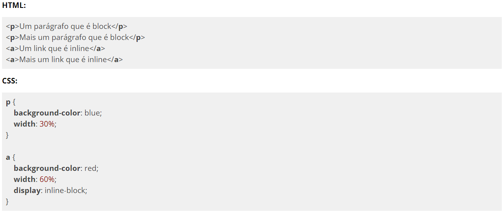

Existem vários padrões de CSS mas durante o curso vamos usar um chamado BEMCSS. A vantagem de se usar BEMCSS para quem está começando com desenvolvimento HTML e CSS é que ele é um padrão que foca bastante em estrutura e facilita bastante na hora planejar os nomes das classes.

Vamos ver como que BEM funciona com o exemplo abaixo:

Da maneira que montamos a estrutura acima fica bem fácil saber o que estamos estilizando no CSS. Veja a diferença:

Tipos de display
Existem 2 tipos de display que caracterizam a exibição padrão da maior parte dos elementos HTML: display: block e display: inline. A maneira mais fácil de ver a diferença entre eles é usando as tags que possuem essas propriedades por padrão, <p> e <a> respectivamente, e colocar uma cor de fundo.

Veja o espaço que esses elementos realmente ocupam. A tag <p> ocupa toda a largura da página enquanto a tag <a> ocupa apenas o espaço necessário para mostrar o texto que colocamos. Vamos colocar mais elementos no nosso exemplo acima.

Podemos observar que agora um parágrafo ficou um embaixo do outro e os links ficaram um do lado do outro. Esses comportamentos são os esperados de elementos block e inline. Como um elemento block ocupa toda a largura da tela não podemos colocar outro elemento do lado porque não há espaço. Agora como no inline o elemento ocupa só o espaço necessário para mostrar nosso texto então podemos colocar outros elementos que caibam naquele espaço. Bom, vamos então resolver o problema de espaço da tag <p>:

Bom, agora temos dois problemas. Mesmo com o espaço extra os parágrafos não ficaram um do lado do outro e nossos links não tiveram alterações em suas larguras. Vamos usar o inspetor de elementos de nosso navegador para ver o que está acontecendo com esses elementos.
Selecionando a tag <p> com nosso inspetor conseguimos ver que ela realmente está ocupando 30% do espaço da tela do navegador, mas agora tem alguma coisa a mais que não colocamos no CSS. Margin. Existe uma margin ocupando o restante do espaço que era ocupado pela tag <p>. Utilizando a propriedade margin-right: 0px; não parece fazer efeito. Mas está tudo bem! Esse é o comportamento esperado de um elemento block.
Vamos ver agora o que aconteceu com nossos links. Nossos links parecem ter ignorado completamente a propriedade de largura que colocamos. Mais uma vez, está tudo bem! Esse é o comportamento padrão de um elemento inline. Diferente de um elemento block, um elemento inline não recebe propriedades de tamanho (width e height) e isso pode gerar alguns problemas com estilização. Foi criado então o display: inline-block que permite usar o melhor dos dois mundos. Vamos usar o exemplo acima novamente só que mudando o tipo de display do link:
